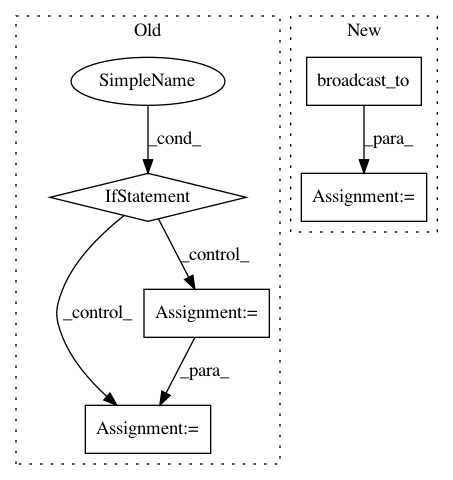

3d5024b40e2e089251af1b4b89c5ec1c7145412c,scipy/stats/_continuous_distns.py,levy_stable_gen,_rvs,#levy_stable_gen#Any#Any#,2952
Before Change
ialpha = 1.0/alpha
aTH = alpha*TH
if beta == 0:
return W/(cos(TH)/tan(aTH)+sin(TH))*((cos(aTH)+sin(aTH)*tan(TH))/W)**ialpha
val0 = beta*tan(pi*alpha/2)
th0 = arctan(val0)/alpha
val3 = W/(cos(TH)/tan(alpha*(th0+TH))+sin(TH))
res3 = val3*((cos(aTH)+sin(aTH)*tan(TH)-val0*(sin(aTH)-cos(aTH)*tan(TH)))/W)**ialpha
return res3
After Change
sz = self._size
alpha = broadcast_to(alpha, sz)
beta = broadcast_to(beta, sz)
TH = uniform.rvs(loc=-pi/2.0, scale=pi, size=sz)
W = expon.rvs(size=sz)
aTH = alpha*TH
bTH = beta*TH
cosTH = cos(TH)
tanTH = tan(TH)
res = _lazywhere(alpha == 1, (alpha, beta, TH, aTH, bTH, cosTH, tanTH, W),
alpha1func, f2=alphanot1func)
In pattern: SUPERPATTERN
Frequency: 3
Non-data size: 5
Instances
Project Name: scipy/scipy
Commit Name: 3d5024b40e2e089251af1b4b89c5ec1c7145412c
Time: 2016-06-19
Author: warren.weckesser@gmail.com
File Name: scipy/stats/_continuous_distns.py
Class Name: levy_stable_gen
Method Name: _rvs
Project Name: jonathf/chaospy
Commit Name: 272f235fd8418eae67631d62051084eb363f781b
Time: 2020-11-05
Author: jonathf@users.noreply.github.com
File Name: chaospy/quadrature/leja.py
Class Name:
Method Name: quad_leja
Project Name: tensorflow/transform
Commit Name: 319d76de1d740a0500b9bc321ddc40bf3c032f71
Time: 2021-01-26
Author: zoy@google.com
File Name: tensorflow_transform/tf_utils.py
Class Name:
Method Name: reduce_batch_count_mean_and_var